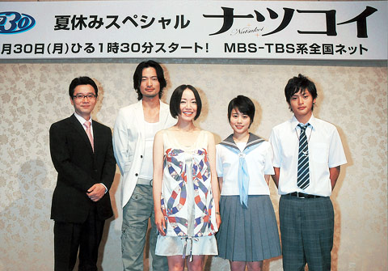

ドラマ「ナツコイ」制作発表で主演・ちはるが過去の恋を後悔!?

6月30日（月）スタートの昼ドラマ「ナツコイ」の制作発表記者会見が16日、都内で行われ、ちはる、前川泰之、高畑充希、兼子舜、尾美としのりらが出席
した。
本作は、TBS系で'92年から放送が始まった「ドラマ30」枠の記念すべき100作目。夏の鮮やかな情景を彩る群馬・桐生と湘南・鎌倉を舞台に、 初恋の人に再会した母と、初めての恋に落ちるその娘の母娘2世代、6年間にわたるラブストーリーを描く。
初恋の恋人・浩介（前川）と再会し、心を揺らす主婦・由紀子を演じるちはるは、「テレビドラマに出演するのは12年ぶり。最初はプレッシャーを感じ ましたが、共演者の皆さんが優しくて、現場はすごく楽しいです」とにっこり。タイトルにちなみ“夏の恋”の思い出を聞かれると、「結構いっぱいあります （笑）。薄着になるぶん、心も薄着になるというか。でも、後で後悔するようなことも多かったような…。このドラマでは尾美さん、前川さんと擬似恋愛をさせ ていただいて、本当にドキドキしました」とちょっぴりテレくさそうに語った。
由紀子の中学3年の娘・なつきを演じる高畑も「私もドラマの中でテレてしまうような恋愛体験をさせていただいて、忘れられない思い出になりました。 中でも、海辺で自転車の2人乗りをして、『タイタニックみたい』って言うシーンが一番恥ずかしかった（笑）」と告白。一方、なつきと引かれあう和真役の兼 子は、「なつきの何気ない笑顔に、演じながらドキドキしてました。あと、ある日、セリフが頭に入らなくて、テイク15ぐらいまでいってしまったときは隣に いるなつきの何ともいえない表情に、このまま愛想を尽かされるんじゃないかと、（再び）ドキドキしました」と明かし、会場の笑いを誘った。
また、由紀子の夫・篤郎役の尾美はすでに撮影を終えており、「これまで前川くんとはにらみ合うシーンばかりで笑い合ったことがなかったけど、前川く ん、本当にお疲れさまでした」とねぎらいの言葉を。前川は「尾美さんとは楽屋でもほとんど話さなかったので、実は若干嫌われてるんじゃないかと思ってたん ですよ（笑）」とホッと胸をなでおろしていた。
ドラマ「ナツコイ」
6月30日（月）スタート 毎週月～金曜昼1:30-2:00 TBS系で放送